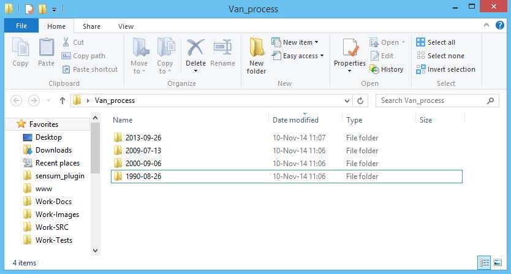
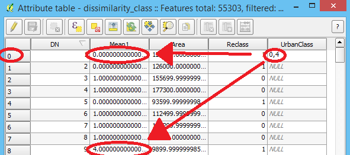

The User’s Guide¶
Introduction¶
Welcome to User’s Documentation
The Sensum Earth Observation algorithms are released as scripts. Input parameters can be specified and interpreted thanks to argparse python module.
In order to call scripts under Microsoft Windows systems you have to start the command line (“cmd.exe” or “powershell.exe”) and type this line
C:/Python27/python.exe [SCRIPTPATH/NAMEOFSCRIPT].py [PARAMETERS]
Under Unix systems you have to start your console and type this line
python [SCRIPTPATH/NAMEOFSCRIPT].py [PARAMETERS]
Alternatively you can start your script directly giving the executable permissions
chmod +x [SCRIPTPATH/NAMEOFSCRIPT].py
And recall it with
./[NAMEOFSCRIPT].py
Medium Resolution¶
Co-Registration¶
- SYNOPSIS:
- coregistration.py reference_path target_folder [–enable_clip SHAPEFILE] [–enable_grid ROW_FACTOR COL_FACTOR] [–enable_resampling] [–enable_SURF] [–enable_FFT]
- OUTPUT:
- Generate raster (*.tiff) results into target_folder named like ORIGINAL_NAME_adj_METHOD
- DESCRIPTION:
- coregistration.py is an algorithm developed to co-register a reference and a target data set using 2 methods:
- SURF (Feature-based method)
- FFT (Area-based method)
- PARAMETERS
- reference_path
- Reference folder Path
- target_folder
- Target folder with images to change
- –enable_clip SHAPEFILE
- Enable definition of a region of interest using a shapefile
- –enable_grid ROW_FACTOR COL_FACTOR
- Enable an automatic tile extraction. Rows and columns of the desired tile are input parameters
- –enable_SURF
- Enable SURF method
- –enable_FFT
- Enable FFT method
EXAMPLES
Unix
~/.qgis2/python/plugins/sensum_plugin/scripts/coregistration.py "~/Desktop/Work-Images/07-D-Case12/2007-07-24" "~/Desktop/Work-Images/07-D-Case12" --enable_clip "~/Desktop/Work-Images/07-D-Case12/Mask_reclass1_Identity.shp" --enable_SURFMS Windows
C:/Python27/python.exe "HOMEPATH%/.qgis2/python/plugins/sensum_plugin/scripts/coregistration.py" "HOMEPATH%/Desktop/Work-Images/07-D-Case12/2007-07-24" "HOMEPATH%/Desktop/Work-Images/07-D-Case12" --enable_clip "HOMEPATH%/Desktop/Work-Images/07-D-Case12/Mask_reclass1_Identity.shp" --enable_SURF
Merge¶
- SYNOPSIS:
- merge.py output_path [-i INPUT1, INPUT2, ...]
- OUTPUT:
- A tiff image union of the input images is generated and named according to the specified output path
- DESCRIPTION:
- merge.py is a merging tool. It is designed to take as input more than one image and merge them.
- PARAMETERS
- output_path
- Output raster
- -i INPUT1, INPUT2, ...
- Input rasters
EXAMPLES
Unix
~/.qgis2/python/plugins/sensum_plugin/scripts/merge.py "~/Desktop/Work-Tests/merge.tiff" -i "~/Desktop/Work-Images/Merge_cas/merge_01.tiff" "~/Desktop/Work-Images/Merge_cas/merge_02.tiff" "~/Desktop/Work-Images/Merge_cas/merge_03.tiff"MS Windows
C:/Python27/python.exe "HOMEPATH%/.qgis2/python/plugins/sensum_plugin/scripts/merge.py" "HOMEPATH%/Desktop/Work-Tests/merge.tiff" -i "HOMEPATH%/Desktop/Work-Images/Merge_cas/merge_01.tiff" "HOMEPATH%/Desktop/Work-Images/Merge_cas/merge_02.tiff" "HOMEPATH%/Desktop/Work-Images/Merge_cas/merge_03.tiff"
Stack Satellite¶
- SYNOPSIS:
- stacksatellite.py sat_folder segmentation_name n_classes [–coregistration] [–builtup_index_method] [–pca_index_method] [–pca_classification_method] [–dissimilarity_method] [–pca_ob_method] [–ref_dir REFERENCE_DIRECTORY] [–restrict_to_city SHAPEFILE] [–segmentation_parameters PARAMETER1 PARAMETER2 PARAMETER3 PARAMETER4]
- OUTPUT:
- According with methods and options selected, outputs are generated in the satellite folder or single dataset folder (year folder). Raster images (*.tiff) are the output for pixel-based methods (builtup_index, pca_index and pca_classification) while shapefiles are the output for object-based methods.
- DESCRIPTION:
- stacksatellite.py is a script designed to process a medium resolution dataset. The algorithm, according to methods and options selected, generates different outputs. sat_folder is the main directory containing sub-directories related to each year (the following image shows an example of satellite folder).
- 
- PARAMETERS
- sat_folder
- Main folder path
- segmentation_name
- “Edison” or “Meanshift”
- n_classes
- Number of classes in unsupervised classification
- –coregistration
- Co-Registration option
- –builtup_index_method
- Built-up Index method
- –pca_index_method
- PCA index method
- –pca_classification_method
- PCA classification method
- –dissimilarity_method
- Dissimilarity method
- –pca_ob_method
- PCA object method
- –restrict_to_city SHAPEFILE
- Tiling shapefile.
- –segmentation_paramEters PARAMETER1 PARAMETER2 PARAMETER3 PARAMETER4
- Edison:
- PARAMETER1: spatial_radius
- PARAMETER2: range_radius
- PARAMETER3: min_size
- PARAMETER4: scale
- Meanshift:
- PARAMETER1: spatial_radius
- PARAMETER2: range_radius
- PARAMETER3: threshold
- PARAMETER4: max_iter
- PARAMETER5: min_size
EXAMPLES
Unix
~/.qgis2/python/plugins/sensum_plugin/scripts/stacksatellite.py "~/Desktop/Work-Images/07-D-Case12" "Edison" "5" --restrict_to_city "~/Desktop/Work-Images/07-D-Case12/Mask_reclass1_Identity.shp" --coregistration --dissimilarity_method --segmentation_paramEters 5 15 100 1MS Windows
C:/Python27/python.exe "HOMEPATH%/.qgis2/python/plugins/sensum_plugin/scripts/stacksatellite.py" "HOMEPATH%/Desktop/Work-Images/07-D-Case12" "Edison" "5" --restrict_to_city "HOMEPATH%/Desktop/Work-Images/07-D-Case12/Mask_reclass1_Identity.shp" --coregistration --dissimilarity_method --segmentation_paramEters 5 15 100 1
Change Detection¶
- SYNOPSIS:
- change_detection.py main_folder extraction field [–spatial_filter]
- OUTPUT:
- Generate a “change_detection_pca.shp” or “change_detection_dissimilarity.shp” file as output into the “main_folder” according to the extraction option.
- DESCRIPTION:
change_detection.py is a script designed to detect changes without user supervision. The algorithm works on the results generate by the stack satellite script. “Change Detection” algorithm compares built-up extractions (object-based methods) from different dates and filters results in 3 steps:
- count changes through years in order to analyze the results and assign C_Factor 0 to no changes, C_Factor 1 to one correct change and from 0.5 to 1 to no possible change or more than 1 change.
- time- and continuity-wise change analysis by taking 4-years-span windows to correct sequence with 1 or more possible changes.
- applied to undetermined changes coming from step 2, it is designed to process features around the undetermined ones in order to find a spatial similarity with the neighbors.
- PARAMETERS
- main_folder
- “Stack Satellite style” folder processed by the stacksatellite.py script.
- extraction
- Select “PCA” or “Dissimilarity” built-up extraction.
- field
- Attribute in the pca_class or dissimilarity_class shapefiles related to built-up areas. You have to manually edit just the first feature of the shape by writing the classes related to built-up separated by comma (include screen shot as example).
EXAMPLES
Unix
~/.qgis2/python/plugins/sensum_plugin/scripts/change_detection.py "~/Work-Images/Change_detection_Izmir" "PCA" "UrbanClass"MS Windows
C:/Python27/python.exe "HOMEPATH%/.qgis2/python/plugins/sensum_plugin/scripts/change_detection.py" "HOMEPATH%/Desktop/Work-Images/Change_detection_Izmir" "PCA" "UrbanClass"
High Resolution¶
Footprints¶
- SYNOPSIS:
- footprints.py pansharp_file training_set training_attribute output_shape [–classes CLASS1, CLASS2, ...] [–optimizer}
- OUTPUT:
- Generate a shapefile (*.shp) named as the output_shape parameter.
- DESCRIPTION:
- footprints.py is an algorithm developed in order to extract building footprints from supervised classification. Inputs are a pan-sharpened image and a training set shapefile (for the supervised classification). The list of classes related to buildings is also requested. The process is made of 5 steps:
- Optional OTB Smooth Filter.
- OTB supervised classification (Support Vector Machine, SVM).
- Conversion of classification output to shapefile.
- Masking and filtering of the classes related to buildings.
- Morphological filtering.
- PARAMETERS
- pansharp_file
- Pan-sharpened input raster
- training_set
- Training set as shapefile
- training_attribute
- Training Field identifier
- output_shape
- Output shapefile
- –classes CLASS1, CLASS2, ...
- Buildings class selection
- –optimizer
- Enable smooth filter
EXAMPLES
Unix
~/.qgis2/python/plugins/sensum_plugin/scripts/footprints.py "~/Desktop/Work-Images/Exercises/7/pansharp.tif" "~/Desktop/Work-Images/Exercises/6/Izmir_low_residential_small_patches_footprints_rpj.shp" "Class" "~/Desktop/Work-Tests/building_extraction.shp" -c "3" "1"MS Windows
C:/Python27/python.exe "HOMEPATH%/.qgis2/python/plugins/sensum_plugin/scripts/footprints.py" "HOMEPATH%/Desktop/Work-Images/Exercises/7/pansharp.tif" "HOMEPATH%/Desktop/Work-Images/Exercises/6/Izmir_low_residential_small_patches_footprints_rpj.shp" "Class" "HOMEPATH%/Desktop/Work-Tests/building_extraction.shp" -c "3" "1"
Density¶
- SYNOPSIS:
- density.py buildingShape radius outputShape
- OUTPUT:
- Generate a shapefile (*.shp) into outputShape path.
- DESCRIPTION:
- density.py is a script to compute the building density. It considers a circular window around each feature and calculates how many other features intersect it adding value into “N_Building” row into shapefile. “Density” attribute is also computed using Features Sum Area/Window Area.
- PARAMETERS
- buildingShape
- Building shapefile path
- radius
- Radius of windows
- outputShape
- Output shapefile
EXAMPLES
Unix
~/.qgis2/python/plugins/sensum_plugin/scripts/density.py "~/Desktop/Work-Tests/building_extraction.shp" "10.0" "~/Desktop/Work-Tests/density.shp"MS Windows
C:/Python27/python.exe "HOMEPATH%/.qgis2/python/plugins/sensum_plugin/scripts/density.py" "HOMEPATH%/Desktop/Work-Tests/building_extraction.shp" "10.0" "HOMEPATH%/Desktop/Work-Tests/density.shp"
Height¶
- SYNOPSIS:
- height.py input_shadow input_buildings date output_shape idfield window_resize
- OUTPUT:
- Generate a shapefile (*.shp) into outputShape path.
- DESCRIPTION:
- height.py is an algorithm designed to estimate the height of buildings from shadows and acquisition date. The result is automatically assigned to related footprints.
- PARAMETERS
- input_shadow
- Shadows shapefile path
- input_buildings
- Building shapefile path
- date
- Acquisition date (hour in EDT)
- output_shape
- Output shapefile
- idfield
- Shadow ID field
- window_resize
- Searching window radius
EXAMPLES
Unix
~/.qgis2/python/plugins/sensum_plugin/scripts/height.py "~/Desktop/Work-Tests/building_extraction.shp" "~/Desktop/Work-Tests/building_shadows.shp" "2007/1/17 15:34:00" "height.shp" "ID" "1.0"MS Windows
C:/Python27/python.exe "HOMEPATH%/.qgis2/python/plugins/sensum_plugin/scripts/height.py" "HOMEPATH%/Desktop/Work-Tests/building_extraction.shp" "HOMEPATH%/Desktop/Work-Tests/building_shadows.shp" "2007/1/17 15:34:00" "height.shp" "ID" "1.0"
Regularity¶
- SYNOPSIS:
- regularity.py input_buildings output_shape
- OUTPUT:
- Generate a shapefile (*.shp) into outputShape path.
- DESCRIPTION:
- regularity.py can be used to determine the regularity and alignment of buildings. A polygon is considered regular when the ratio between the two main directions is less than 4.
- PARAMETERS
- input_buildings
- Input buildings shapefile path
- output_shape
- Output shapefile
EXAMPLES
Unix
~/.qgis2/python/plugins/sensum_plugin/scripts/regularity.py "~/Desktop/Work-Tests/building_extraction.shp" "~/Desktop/Work-Tests/regularity.shp"MS Windows
C:/Python27/python.exe "HOMEPATH%/.qgis2/python/plugins/sensum_plugin/scripts/regularity.py" "HOMEPATH%/Desktop/Work-Tests/building_extraction.shp" "HOMEPATH%/Desktop/Work-Tests/regularity.shp"
Test Features¶
- SYNOPSIS:
- test_features.py input_file segmentation_shape output_shape field [–max_br] [–mean] [–min_br] [–mode] [–ndvi_std] [–ndvi_mean] [–std] [–weigh_br] [–ASM] [–contrast] [–correlation] [–dissimilarity] [–energy] [–homogeneity] [–multi]
- OUTPUT:
- A shapefile is generated in output_shape path
- DESCRIPTION:
- test_features.py is a script made to compute a set of features related to segments. Statistics are calculated based on the input raster file using a segmentation shapefile as mask. Computed features are appended as attribute to the shapefile.
- PARAMETERS
- input_file
- Input raster file
- segmentation_shape
- Segmentation shape mask
- output_shape
- Output shapefile
- field
- Identifier shapefile ID
- –max_br
- Maximum BR
- –mean
- Mean
- –min_br
- Minimun BR
- –mode
- Mode
- –ndvi_std
- NDVI Standard Deviation
- –ndvi_mean
- NDVI Mean
- –std
- Standard Deviation
- –weigh_br
- Weight BR
- –ASM
- ASM
- –contrast
- Contrast
- –correlation
- Correlation
- –energy
- Energy
- –homogeneity
- Homogeneity
- –multi
- Active multiprocess option (hight CPU usage)
EXAMPLES
Unix
~/.qgis2/python/plugins/sensum_plugin/scripts/test_features.py "~/Desktop/Work-Tests/input.tiff" "~/Desktop/Work-Tests/building_extraction.shp" "~/Desktop/Work-Tests/features_calculation.shp" "DN" --max_br --mode --contrast --energyMS Windows
C:/Python27/python.exe "HOMEPATH%/.qgis2/python/plugins/sensum_plugin/scripts/test_features.py" "HOMEPATH%/Desktop/Work-Tests/input.tiff" "HOMEPATH%/Desktop/Work-Tests/building_extraction.shp" "HOMEPATH%/Desktop/Work-Tests/features_calculation.shp" "DN" --max_br --mode --contrast --energy